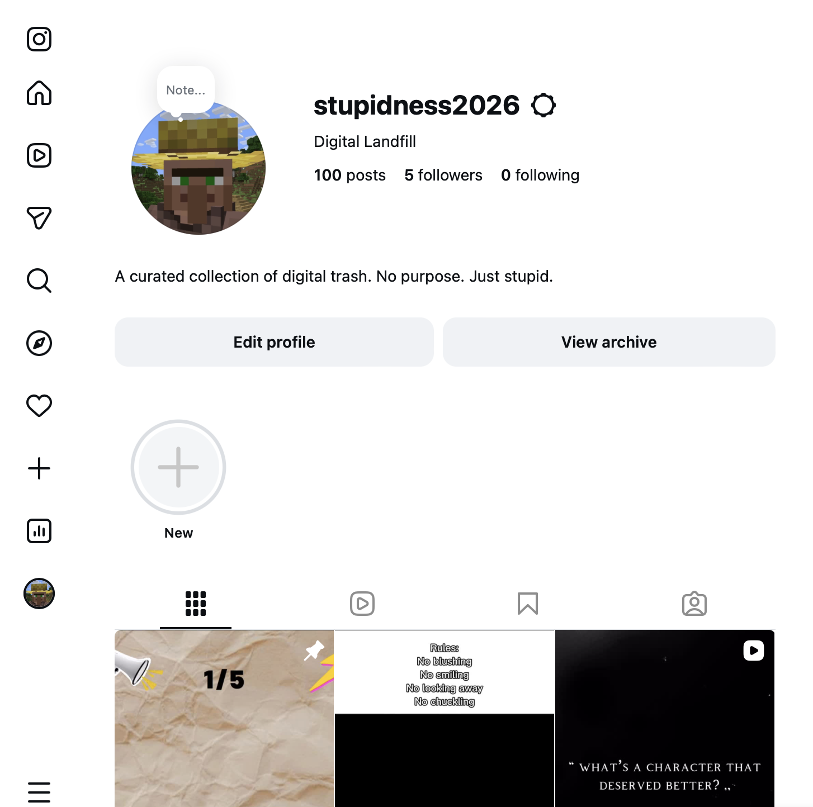
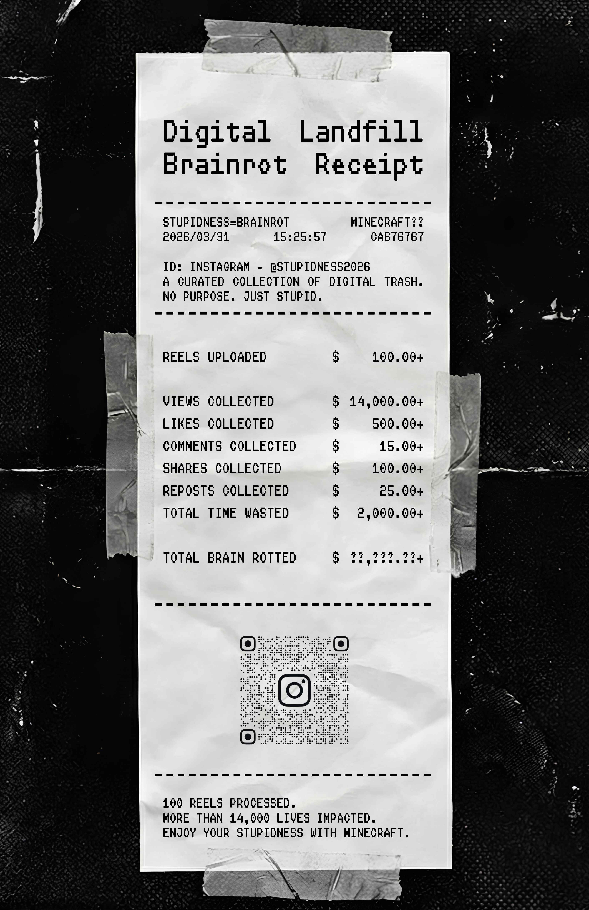

Digital Landfill & The Brainrot Receipt
This project is a satire of internet brainrot, which is the deterioration of intellect caused by overconsuming trivial online content. It exposes how digital entertainment seamlessly morphs into an addictive, time-wasting material in our daily lives.
<Sihyun_Park> Just one more video...
[System] Yeah, it's gonna be longer
To document this phenomenon, I created an Instagram account, @stupidness2026. Utilizing Minecraft, the most iconic brainrot game aesthetic, I produced and posted over 100 low-quality short-form videos to track real user engagement.

The @stupidness2026 Instagram feed.
(Click the image to visit the live profile)
The final output is the Brainrot Receipt. This infographic poster calculates the total interactions and visualizes them as numerical values. It translates the intangible consumption of stupidness into a tangible, physical cost.
